University of Stuttgart / Harvard University Wyss Institute2020#056서베이·산업동향리뷰논문
현장 자율 건설 로봇: 무감독 시공을 향하여
On-site Autonomous Construction Robots: Towards Unsupervised Building
Nathan Melenbrink, Justin Werfel, Achim Menges · Automation in Construction 119 (2020) 103312
한줄 요약 — 굴착·정지 같은 현장 준비부터 기초와 구조체·마감까지 건설 전 과정을 작업 단계와 자율수준으로 재배열해, 기존 중장비의 부분 자동화만으로는 무감독 시공에 도달하기 어렵고 작업 전용 하드웨어·재료·센싱과 여러 이종 로봇의 통합 운용이 함께 발전해야 한다고 주장한 폭넓은 리뷰다.
1.연구 배경 및 동기
개별 건설로봇의 성과를 무감독 시공 전체로 연결하는 관점
건설은 기계작업 비중이 높지만 현장 로봇 자동화는 제한적이다. 현장은 구조와 순서가 계속 바뀌고, 지반·날씨·자재·사람·다른 장비가 예측 불가능하게 상호작용한다. 완전 자율 시스템이라면 작업자 감독이나 개입 없이 이런 변화에 대응하면서 부지 정리와 토공, 기초, 구조체, 설비와 마감까지 순차적으로 완수해야 한다. 논문은 개별 로봇의 성능보다 건물 한 채가 완성되기까지 필요한 작업군 전체가 연결돼 있는지를 핵심 질문으로 둔다.
저자들은 건설 자동화가 두 경로로 갈라졌다고 본다. 산업계는 인간 운전자를 전제로 발전한 굴착기·불도저·크레인 같은 성숙 장비에 GPS 안내, grade assist, 원격조작과 자동제어를 점진적으로 더하고 프리패브로 현장 작업을 줄인다. 학계는 적층제조, 블록 조립, 군집로봇처럼 자율성을 전제로 새 기계와 재료를 제안하지만 실험실·모사 재료에 머무는 경우가 많다. 이 간극 때문에 어느 한쪽의 성공도 전체 현장 무인화로 자연스럽게 이어지지 않는다.
리뷰는 공정을 현장 준비, 하부 구조, 상부 구조의 세 그룹으로 나누고 성숙 기술과 신흥 기술을 함께 배치한다. 또한 자동차 분야의 0~5 자율수준을 건설 작업에 맞게 수정해, 한 자유도 보조부터 특정 현장 조건에서의 무인 작업, 모든 합리적 현장 조건에서의 완전 자율까지 비교한다. 이 틀을 통해 토공 자동화가 상부 구조 로봇보다 현장 적용에 가까운 부분이 있으면서도 다른 작업과 조정되지 않아 전체 시공의 병목으로 남는다는 점을 드러낸다.
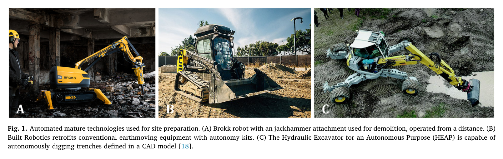
원문 Figure 1 · PDF p.3 — Fig. 1. Automated mature technologies used for site preparation. (A) Brokk robot with an jackhammer attachment used for demolition, operated from a distance. (B) Built Robotics retrofits conventional earthmoving equipment with autonomy kits. (C) The Hydraulic Excavator for an Autonomous Purpose (HEAP) is capable of autonomously digging trenches defined in a CAD model [18].
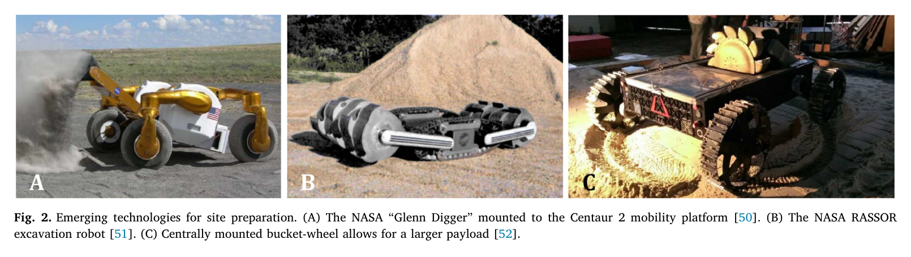
원문 Figure 2 · PDF p.4 — Fig. 2. Emerging technologies for site preparation. (A) The NASA “Glenn Digger” mounted to the Centaur 2 mobility platform [50]. (B) The NASA RASSOR excavation robot [51]. (C) Centrally mounted bucket-wheel allows for a larger payload [52].
선행 연구의 한계
기존 리뷰는 BIM, 3D 프린팅, 현장 센싱 또는 통제된 실험실 로봇처럼 한 기술영역에 집중해 전체 시공 순서를 함께 보지 않았다.
산업계의 중장비 자동화는 기존 운전자용 하드웨어의 구조와 안전·조작성 한계를 그대로 상속한다.
학계의 자율 조립·적층 시스템은 발포체나 실험용 블록 등 실제 내구 건축재가 아닌 모사 재료에 의존하는 경우가 많다.
부지 준비와 기초, 비계·거푸집 같은 보조작업은 구조체 제작보다 연구가 적어 전체 공정을 끊는다.
다수 로봇의 동시 운용 사례도 사전 경로를 따를 뿐 서로 통신하거나 상태를 인식하지 못하는 수준이 존재한다.
이 연구의 기여
건설 과정을 현장 준비, 하부 구조, 상부 구조로 나눠 성숙 기술과 신흥 기술을 하나의 공정 관점에서 폭넓게 검토했다.
자동차의 SAE 개념을 변형한 LoA 0~5 정의로 서로 다른 건설로봇의 최고 시연 자율수준을 비교했다.
기존 장비의 점진적 자동화와 자율운용을 전제로 한 작업특화 신형 하드웨어의 장단기 역할을 구분했다.
원격·위험 현장 우선, 적정 장비 규모, 분산제어, 전 생애주기, 프리패브와 인력교육을 포함한 연구·산업 방향을 제안했다.
2.방법론 및 시스템 구성
이 논문은 PRISMA식 검색·선별 건수를 제시하는 체계적 리뷰가 아니라, 산업 사례와 학술 연구를 건설 공정 단계 및 기술 성숙 경로에 따라 배열한 광범위한 서술형 리뷰다. 저자들은 먼저 현장 준비에 토공·정지·토질 안정화·철거를, 하부 구조에 콘크리트 기초·말뚝·앵커를, 상부 구조에 프리패브 조립·구조 조립·현장 적층제조·마감과 구조의존 로봇을 배치한다. 각 영역에서 기존 장비에 자율기능을 더한 사례와 자율성을 전제로 새로 설계한 사례를 병렬로 읽는다.
종합 단계에서는 건설용 LoA를 정의해 대표 시스템을 표로 분류한다. LoA 0은 제어 자유도가 없는 센싱, LoA 1은 한 자유도 보조, LoA 2는 여러 자유도를 제어하지만 복구와 다른 기능에 사람이 필요한 부분 자동화, LoA 3은 조건부 전 자유도 운용, LoA 4는 정해진 현장 조건에서 교란에 적응하며 사람 없이 작업, LoA 5는 합리적으로 예상되는 모든 현장 조건에서 작업 완수로 정의된다. 통제된 실험실에서만 검증한 장비는 최대 LoA 4, 현장이나 장비에 광범위한 사전 준비가 필요한 시스템은 최대 LoA 3으로 제한한다.
처리 파이프라인
1
공정 전 주기 분해
유용한 구조물을 만들 때 필요한 현장 준비, 하부 구조, 상부 구조를 순차 작업군으로 정의하고, 각 작업군에 포함되는 자재·장비·보조공정을 정리한다.
2
성숙 기술 사례 검토
굴착기·불도저·로더·덤프트럭, 콘크리트 펌프, 프리패브와 같은 기존 산업 장비에 원격조작·GPS·grade assist·자동제어를 더한 사례와 실제 배치 조건을 살핀다.
3
신흥 자율기술 사례 검토
우주 토공로봇, 소형 분산 굴착기, 적층제조, 블록·노드-스트럿 조립, UAV, 구조물 등반 로봇처럼 자율작업을 전제로 설계한 하드웨어와 재료 시스템을 비교한다.
4
건설용 자율수준 재정의
제어 자유도, 인간의 실패 복구 필요성, 현장 조건 범위, 교란 적응 여부에 따라 LoA 0~5를 정의하고 대표 시스템의 최고 시연 수준을 표로 정리한다.
5
공정 간 공백 도출
각 작업군의 최고 자율수준만 보는 대신 부지 준비에서 구조·마감까지 연결할 때 빠지는 기초, 비계·거푸집, 센싱, 자재 공급, 품질검사와 로봇 간 조정을 찾는다.
6
연구 방향과 산업 교훈 종합
적정 규모의 전용 하드웨어, 재료-로봇 공동설계, 내장센싱, 원격 현장 우선, 프리패브, 분산제어, 부가가치 검토와 자동화 활용 교육을 장기 방향으로 제시한다.
원문 수식과 의미
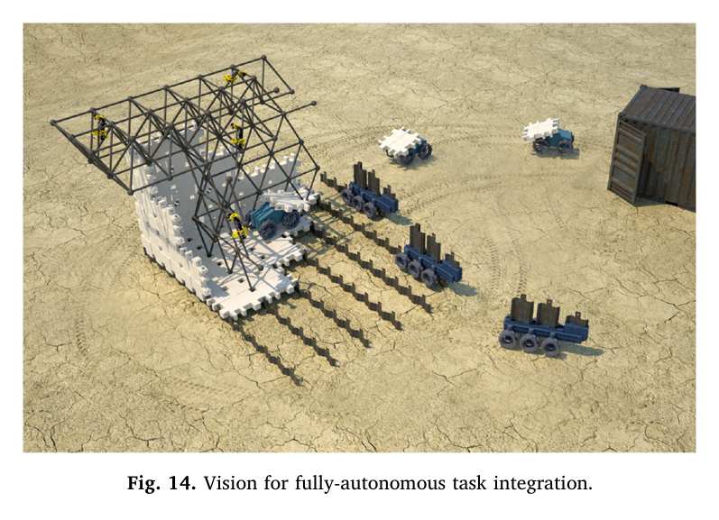
원문 Figure 14 · PDF p.15 — Fig. 14. Vision for fully-autonomous task integration.
3.핵심 기술
현장 준비: 자동화에 가까우나 전체 시공과 단절된 토공
현장 준비는 철거·잔해 제거·토공·평탄화·토질 안정화를 포함한다. 기존 장비 자동화는 GPS 안내, 유압 제어, 센서융합, 토양 모델, 경로계획, 자율화 키트로 진전됐고, 1998년에는 자율 굴착기가 숙련자와 비슷한 속도로 트럭을 적재한 사례가 있었다. 산업용 grade assist는 운전자가 전진 속도를 제어하는 동안 붐과 버킷을 설계 경사에 맞춘다.
그러나 도시 현장에서는 매설관, 좁은 경계, 사람과 장비가 자동화 난도를 높인다. Volvo THOR의 굴착기·운반차 연계도 두 장비가 서로를 감지하거나 통신하지 않고 사전 경로를 따르는 수준이었다. 반면 우주용 RASSOR·Polaris 같은 신형 장비는 기존 중장비를 그대로 축소하지 않고 낮은 중량과 높은 payload ratio, 분산 운용을 목표로 설계한다.
토공은 반복성과 원격 현장 수요 때문에 자동화 우선순위가 높다.
기존 대형 장비는 인간 운전자용 구조가 다자유도 동시제어와 안전 설계를 제한한다.
신형 소형·분산 장비는 지반 지지력이 낮거나 원격인 현장에서 대안이 될 수 있다.
하부·상부 구조와 보조작업의 불균형
기초와 말뚝 같은 하부 구조는 모든 건축물에 필요하지만 로봇 연구가 드물다. GPS 말뚝 장비, 자동 터널굴착, 콘크리트 펌프 제어 등 부분 사례는 있으나 완전 자율 공정은 없다. 상부 구조에서는 프리패브, 벽돌·블록 조립, UAV 조립, 적층제조와 구조물 등반 로봇 등 훨씬 많은 사례가 제시된다.
완성 구조에 보이지 않는 비계, 거푸집, 임시 지지, 자재 공급과 연결 작업은 연구에서 빠지기 쉽다. 저자들은 폼 블록 조립이나 노드-스트럿 로봇을 최종 구조물 자체보다 거푸집·비계 같은 실제 보조공정에 적용할 가능성을 강조한다.
구조체 제작만 자동화해도 기초와 보조작업이 수동이면 무감독 시공은 불가능하다.
프리패브 확산은 현장 작업을 원재료 가공에서 고차 모듈 조립과 설비 연결로 바꾼다.
연구의 시연 재료가 실제 내구·구조 기준을 만족하는지 평가해야 한다.
재료-로봇 공동설계와 내장센싱
인간 시공법을 로봇에 그대로 모사하는 대신 기계, 재료, 접합법을 함께 설계하는 material-robot system을 제안한다. 로봇이 취급하기 쉬운 블록, 노드-스트럿, 섬유 권취 재료처럼 자재 형상과 조립 규칙이 로봇의 제한을 보완하면 복잡한 범용 조작보다 단순하고 신뢰성 높은 자동화가 가능하다.
건축부재에 능동 또는 수동 센서를 넣으면 중앙 BIM과 고정밀 전역측위에 전적으로 의존하지 않고 부재가 자신의 상태·위치를 전달할 수 있다. 이는 중앙 단일고장점을 줄이고 제한된 지역정보만으로도 여러 로봇이 조립하도록 하는 분산 시공과 연결된다.
기존 자재가 로봇에 최적인 것은 아니라는 전제에서 공정을 다시 설계한다.
수동 센서는 비용과 에너지 부담을 낮추면서 부재 식별과 조립 검증을 지원할 수 있다.
자재와 로봇의 공동 설계는 실험실 모사재료를 실제 구조재로 전환하는 검증이 필요하다.
이종 작업특화 로봇의 조정
완전한 건설은 수십 종류의 작업이 올바른 순서와 공간 제약 아래 연결돼야 한다. 동종 군집, 이종 MoRPHES 로봇, UAV와 산업용 로봇의 섬유 제작 등 제한된 통합 사례가 있지만, 실제 현장의 굴착기·운반차·기초·조립·마감 로봇을 공동 상태와 일정으로 묶는 수준에는 도달하지 못했다.
저자들의 최종 비전은 하나의 범용 거대 로봇이 아니라 작업특화 로봇들이 변화하는 현장에서 자재와 공간을 공유하며 조정되는 생태계다. 중앙집중 제어가 필요한 작업과 국소 규칙으로 움직이는 분산·군집 시스템을 작업 특성에 따라 결합해야 한다.
작업 완료 상태, 자재 위치, 안전영역, 고장과 복구를 로봇 간에 공유해야 한다.
광산처럼 구조화된 환경에서의 차량군 자동화가 일반 건설현장보다 앞서 있다.
이종 로봇 통합은 개별 로봇 최고 성능보다 전체 공정의 병목과 복구능력으로 평가해야 한다.
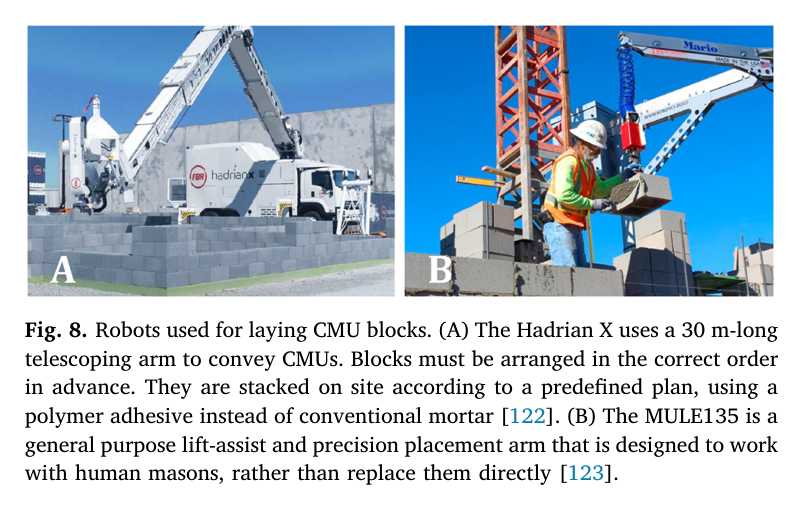
원문 Figure 8 · PDF p.10 — Fig. 8. Robots used for laying CMU blocks. (A) The Hadrian X uses a 30 m-long telescoping arm to convey CMUs. Blocks must be arranged in the correct order in advance. They are stacked on site according to a predefined plan, using a polymer adhesive instead of conventional mortar [122]. (B) The MULE135 is a general purpose lift-assist and precision placement arm that is designed to work with human masons, rather than replace them directly [123].
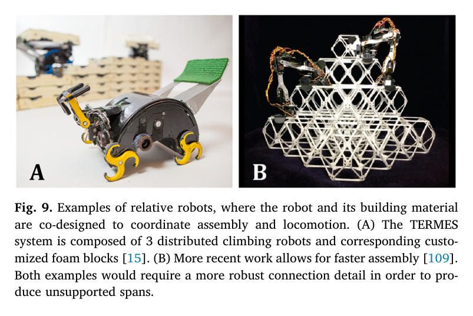
원문 Figure 9 · PDF p.10 — Fig. 9. Examples of relative robots, where the robot and its building material are co-designed to coordinate assembly and locomotion. (A) The TERMES system is composed of 3 distributed climbing robots and corresponding custo- mized foam blocks [15]. (B) More recent work allows for faster assembly [109]. Both examples would require a more robust connection detail in order to pro- duce unsupported spans.
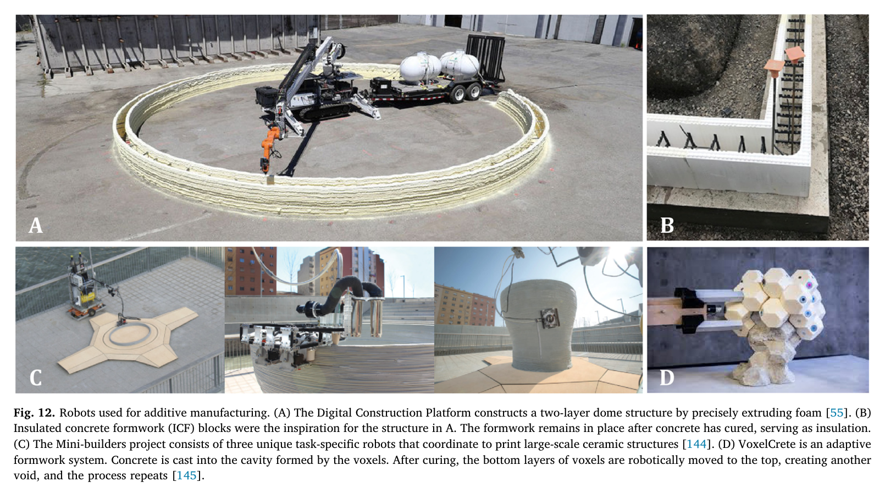
원문 Figure 12 · PDF p.12 — Fig. 12. Robots used for additive manufacturing. (A) The Digital Construction Platform constructs a two-layer dome structure by precisely extruding foam [55]. (B) Insulated concrete formwork (ICF) blocks were the inspiration for the structure in A. The formwork remains in place after concrete has cured, serving as insulation. (C) The Mini-builders project consists of three unique task-specific robots that coordinate to print large-scale ceramic structures [144]. (D) VoxelCrete is an adaptive formwork system. Concrete is cast into the cavity formed by the voxels. After curing, the bottom layers of voxels are robotically moved to the top, creating another void, and the process repeats [145].
4.실험 결과
실험 환경·장비·데이터
독립적인 로봇 실험을 수행한 논문이 아니라 학계·산업계의 현장 준비, 하부 구조, 상부 구조 자동화 사례를 폭넓게 비교한 리뷰다.
검토 단위는 기존 중장비에 자동화를 추가한 성숙 기술과, 자율작업을 전제로 새로 설계한 신흥 기술이다.
대표 시스템을 건설 공정 세 그룹과 수정된 LoA 0~5 기준으로 분류했다.
실험 프로토콜
공정을 현장 준비·하부·상부 구조로 나누고 각 절에서 대표 장비, 작동원리, 현장 또는 실험실 시연, 적용 한계를 서술했다.
LoA 분류에서는 제어 자유도, 인간 복구 필요성, 교란 적응, 적용 가능한 현장조건을 판정 기준으로 사용했다.
통제된 실험실 시연은 최대 LoA 4, 광범위한 사전 준비가 필요한 시스템은 최대 LoA 3으로 제한했다.
마지막으로 공정 누락과 작업 간 연결 부족을 바탕으로 무감독 시공에 필요한 연구 의제를 도출했다.
비교 기준
기존 인간 운전자용 장비의 점진적 자동화와 자율운용 전용 신형 장비
산업 현장 적용 사례와 학계의 실험실 시연
현장 준비·하부 구조·상부 구조의 기술 분포
LoA 0~5 자율수준
평가 지표
대표 시스템의 최고 시연 LoA
공정 그룹별 자동화 사례의 존재 여부
사람의 감독·복구·현장 사전준비 필요성
문헌에 보고된 장비별 payload ratio와 적용환경
핵심 결과 해석
리뷰의 가장 선명한 결과는 Table 1에서 세 작업군 모두 LoA 5가 비어 있다는 점이다. 현장 준비에는 Built Robotics, 자율 굴착 플랫폼, HEAP, Volvo THOR 등이 LoA 4로 배치되지만, 하부와 상부 구조에서는 LoA 4 사례가 훨씬 제한적이며 어떤 체계도 합리적으로 예상되는 모든 현장 조건에서 전체 작업을 완수하지 못한다. 이는 한 로봇의 자율수준을 올리는 문제보다 서로 다른 작업군 사이의 누락과 통합이 무감독 시공의 결정적 병목임을 뜻한다.
저자들은 단기적으로 성숙 장비의 보조·부분 자동화가 안전과 생산성에 가치가 있으나 장기적으로는 인간 운전자용 기계를 계속 개조하는 방식에 구조적 한계가 있다고 결론낸다. 현장 준비와 기초, 재료-로봇 공동설계, 부재 내장센싱, 비계·거푸집 같은 보조작업, 이종 로봇 조정을 강화해야 한다. 또한 원격·위험·반복 현장을 우선 적용처로 삼고, 장비를 작업에 맞는 규모로 다시 설계하며, 자동화를 단순 인력대체가 아니라 새 장비를 운용·감독할 기술교육의 문제로 다뤄야 한다.
정량 결과
평가 항목
정량 결과
조건·맥락
원문 근거
완전 자율 LoA 5 대표 사례
0개
리뷰가 분류한 현장 준비·하부 구조·상부 구조 세 그룹 모두 Table 1의 LoA 5가 공란이며, 이는 리뷰 분류 결과이지 신규 실험치가 아니다.
PDF p.15
광산 운반차·건설 덤프트럭 payload ratio
100~140%
리뷰가 선행문헌에서 인용한 토공 효율 비교값
PDF p.3
로더 payload ratio
15~25%
리뷰가 선행문헌에서 인용한 기존 로더 범위
PDF p.3
건설용 자율수준 범위
LoA 0~5
제어 자유도와 인간 개입·현장조건을 기준으로 재정의한 분류 체계
PDF p.14
실패 사례와 경계조건
인간 운전용 개조 굴착기는 원격조작성이 나빠 사고 정리 중 산소 실린더를 폭발시킨 사례가 리뷰에 소개된다.
Volvo THOR의 굴착기와 운반차는 동시에 움직였지만 서로 통신하거나 감지하지 않고 사전 경로만 따랐다.
통제된 실험실의 블록·발포체 조립은 실제 구조재와 비정형 현장조건을 대표하지 못한다.
기존 장비를 개조한 콘크리트 배치 장비는 모든 관절을 동시에 움직이지 못해 결과 오차가 허용되지 않는 사례가 있었다.
구조체 제작 로봇만 발전하고 기초·비계·거푸집·자재 공급이 수동으로 남으면 전체 무인 공정이 중단된다.
5.한계 및 향후 연구
현재 한계
검색식, 데이터베이스, 포함·배제 기준, 문헌 수와 품질평가가 제시되지 않은 서술형 리뷰라 재현성과 누락 위험을 정량 평가하기 어렵다.
2020년 이전 사례에 한정돼 이후 대형 굴착기 자율화, 학습 기반 정책, 상용 현장 배치의 진전을 포함하지 않는다.
분야가 건설로봇 전체여서 굴착 힘제어, 토질 인식, 유압 제어, 궤적 성능을 세부 정량 비교하지 않는다.
자동차의 LoA를 건설에 이식한 분류는 유용하지만 장비별 작업범위와 현장 준비량을 단일 등급으로 단순화한다.
문헌 사례의 비용, 생산성, 안전성과 장기 신뢰성이 서로 다른 조건에서 보고돼 직접 비교가 어렵다.
향후 연구
현장 준비와 하부 구조 연구를 상부 구조 자동화와 같은 수준으로 확대하고 공정 간 인터페이스를 정의한다.
작업 전용 로봇과 실제 건축재를 함께 설계해 실험실 시연을 내구 구조물로 전환한다.
건축부재 내장센싱과 분산제어로 중앙 BIM·측위 의존성과 단일고장점을 줄인다.
이종 로봇의 일정·공간·자재·고장복구를 조정하는 통합 시스템을 현장에서 검증한다.
위험·원격·반복 현장을 우선 적용처로 삼아 높은 자동화의 부가가치를 명확히 입증한다.
운전자 대체보다 자동화 장비의 감독·유지·복구에 필요한 직업교육 체계를 강화한다.
6.한마디로 정리
핵심 방법은?
현장 준비·하부·상부 구조별로 성숙 장비 자동화와 자율운용 전용 신흥 로봇을 비교하고, 건설에 맞게 수정한 LoA 0~5로 대표 시스템을 분류했다.
핵심 결과는?
세 작업군 모두 LoA 5 사례가 없고, 부지 준비·기초·보조작업과 이종 로봇 간 조정이 전체 무감독 시공을 끊는 핵심 공백으로 나타났다.
한계는?
서술형 리뷰여서 검색·선별 과정과 정량 품질평가가 없고, 굴착 제어의 세부 성능 및 2020년 이후 기술은 다루지 않는다.
#서베이·산업동향#시스템통합·현장실증#안전·HRI#broad literature review#construction-task taxonomy#multi-robot coordination analysis
나의 의견 / 우리 연구와의 연관성
자율굴착 연구를 개별 장비 데모로 끝내지 않고 전체 시공 흐름에서 위치시키는 데 유용하다. 굴착기는 현장 준비의 핵심이지만 목표면을 만든 뒤 기초·자재 공급·구조 조립으로 상태를 넘기지 못하면 무감독 시공의 구성요소가 되지 못한다. 우리 대시보드에서는 각 논문을 인식·계획·제어 성능뿐 아니라 선행·후속 공정 인터페이스, 사람 개입 조건, 다른 장비와의 조정 수준으로 함께 평가할 수 있다.
논문의 성숙 기술 대 신흥 기술 구분은 기존 대형 유압 굴착기 개조와 자율운용용 전동 플랫폼의 연구전략을 비교하는 기준이 된다. 단기 실증은 기존 장비의 하드웨어 추상화와 안전감독으로 추진하되, 장기적으로는 버킷·재료·작업장을 함께 설계하고 로봇 간 공유 상태와 복구 프로토콜을 갖춰야 한다. 특히 논문이 지적한 THOR의 비통신 병렬작업은 다장비가 단순히 동시에 움직이는 것과 협업하는 것이 다르다는 경계 사례다.
굴착 완료 높이장과 토질·잔류 위험 정보를 기초 시공 로봇에 전달하는 공정 핸드오프를 설계해야 한다.
장비별 자율수준은 정상작업 성능뿐 아니라 사람 호출, 실패복구, 현장 사전준비 범위로 정의해야 한다.
다중 굴착기·덤프트럭 운용에서는 사전 경로 공유를 넘어 상호 위치·작업상태·대기열을 실시간 조정해야 한다.
원격 위험현장은 자율굴착의 경제성과 안전효과를 먼저 입증할 수 있는 적용처다.
재료-로봇 공동설계 관점은 버킷 형상, 표식·센서가 있는 자재, 로봇 친화적 공정 규격으로 확장할 수 있다.
7.전체 그림·표
본문 핵심 위치에 배치하지 않은 원문 Figure와 Table을 원문 페이지 순서로 수록한다.
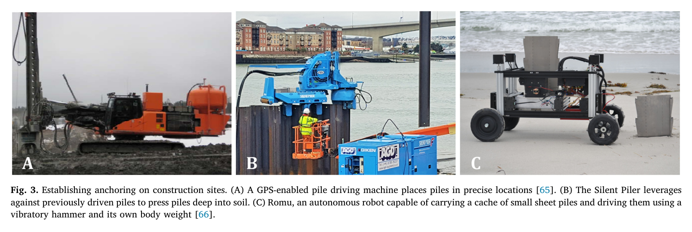
원문 Figure 3 · PDF p.7 — Fig. 3. Establishing anchoring on construction sites. (A) A GPS-enabled pile driving machine places piles in precise locations [65]. (B) The Silent Piler leverages against previously driven piles to press piles deep into soil. (C) Romu, an autonomous robot capable of carrying a cache of small sheet piles and driving them using a vibratory hammer and its own body weight [66].
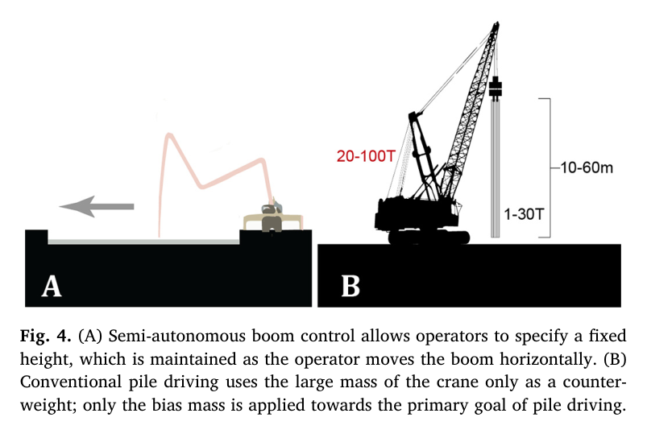
원문 Figure 4 · PDF p.7 — Fig. 4. (A) Semi-autonomous boom control allows operators to specify a fixed height, which is maintained as the operator moves the boom horizontally. (B) Conventional pile driving uses the large mass of the crane only as a counter- weight; only the bias mass is applied towards the primary goal of pile driving.
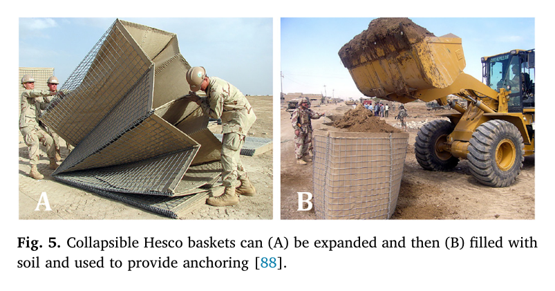
원문 Figure 5 · PDF p.7 — Fig. 5. Collapsible Hesco baskets can (A) be expanded and then (B) filled with soil and used to provide anchoring [88].
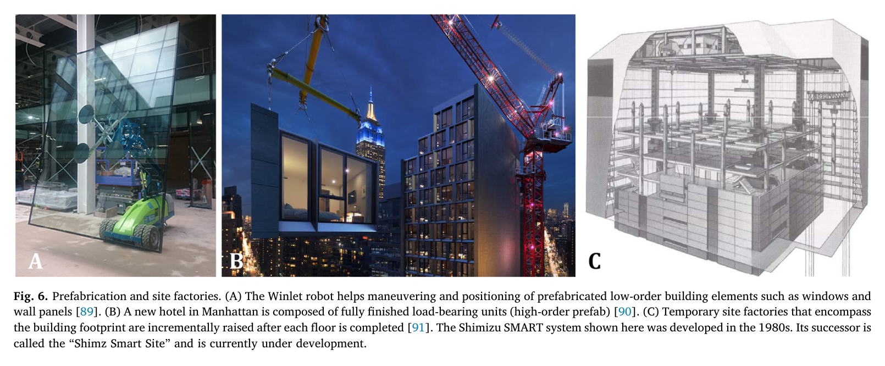
원문 Figure 6 · PDF p.8 — Fig. 6. Prefabrication and site factories. (A) The Winlet robot helps maneuvering and positioning of prefabricated low-order building elements such as windows and wall panels [89]. (B) A new hotel in Manhattan is composed of fully finished load-bearing units (high-order prefab) [90]. (C) Temporary site factories that encompass the building footprint are incrementally raised after each floor is completed [91]. The Shimizu SMART system shown here was developed in the 1980s. Its successor is called the “Shimz Smart Site” and is currently under development.
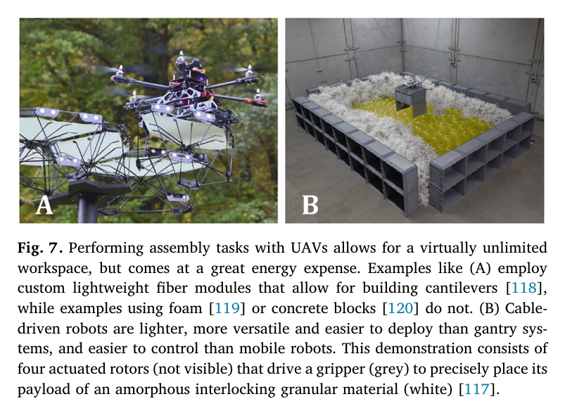
원문 Figure 7 · PDF p.9 — Fig. 7. Performing assembly tasks with UAVs allows for a virtually unlimited workspace, but comes at a great energy expense. Examples like (A) employ custom lightweight fiber modules that allow for building cantilevers [118], while examples using foam [119] or concrete blocks [120] do not. (B) Cable- driven robots are lighter, more versatile and easier to deploy than gantry sys- tems, and easier to control than mobile robots. This demonstration consists of four actuated rotors (not visible) that drive a gripper (grey) to precisely place its payload of an amorphous interlocking granular material (white) [117].
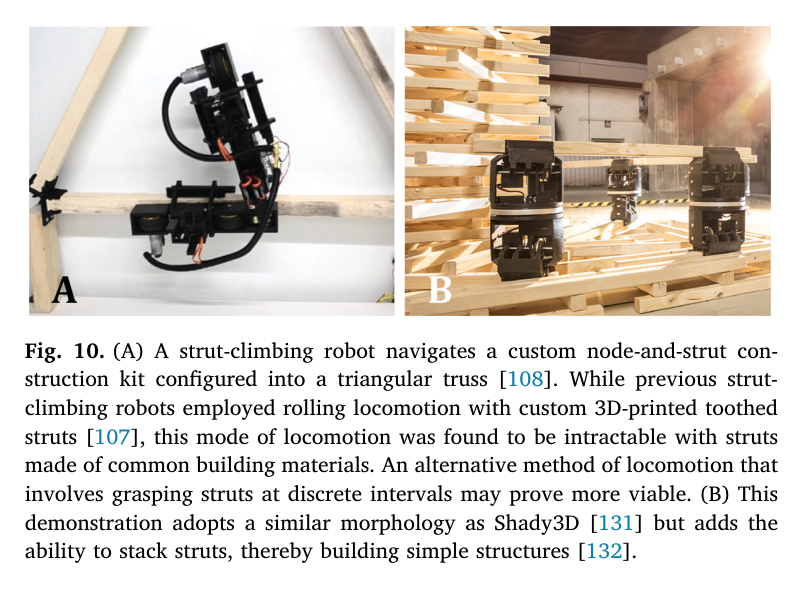
원문 Figure 10 · PDF p.11 — Fig. 10. (A) A strut-climbing robot navigates a custom node-and-strut con- struction kit configured into a triangular truss [108]. While previous strut- climbing robots employed rolling locomotion with custom 3D-printed toothed struts [107], this mode of locomotion was found to be intractable with struts made of common building materials. An alternative method of locomotion that involves grasping struts at discrete intervals may prove more viable. (B) This demonstration adopts a similar morphology as Shady3D [131] but adds the ability to stack struts, thereby building simple structures [132].
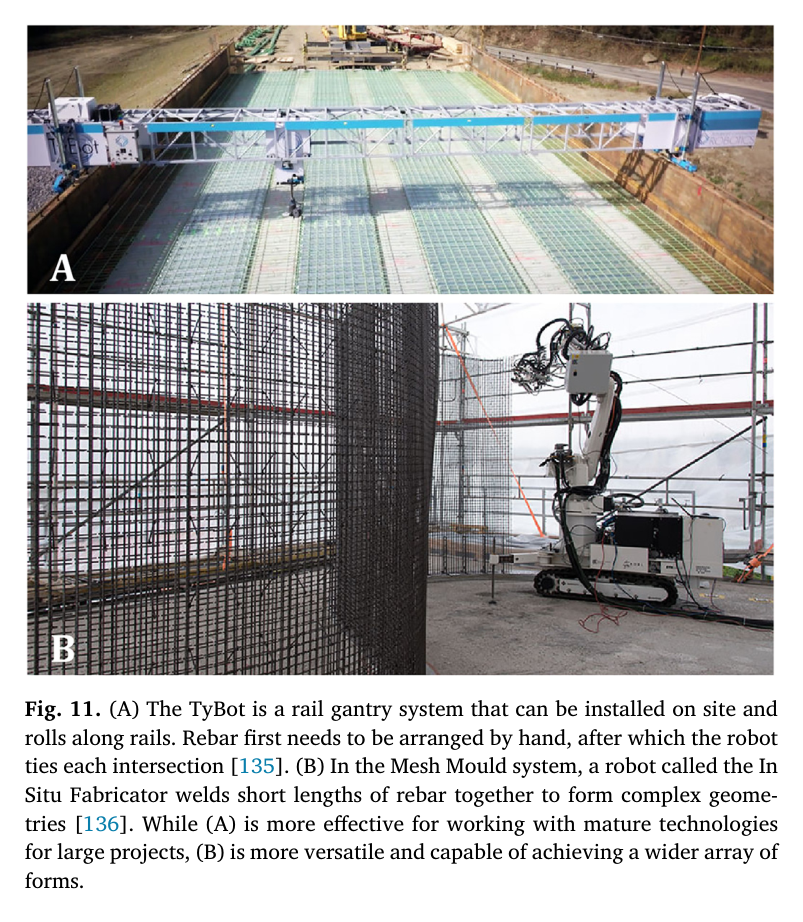
원문 Figure 11 · PDF p.12 — Fig. 11. (A) The TyBot is a rail gantry system that can be installed on site and rolls along rails. Rebar first needs to be arranged by hand, after which the robot ties each intersection [135]. (B) In the Mesh Mould system, a robot called the In Situ Fabricator welds short lengths of rebar together to form complex geome- tries [136]. While (A) is more effective for working with mature technologies for large projects, (B) is more versatile and capable of achieving a wider array of forms.
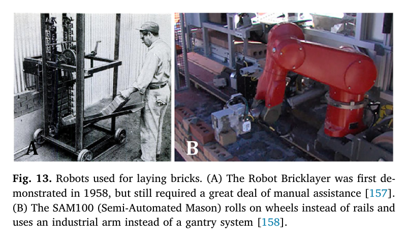
원문 Figure 13 · PDF p.13 — Fig. 13. Robots used for laying bricks. (A) The Robot Bricklayer was first de- monstrated in 1958, but still required a great deal of manual assistance [157]. (B) The SAM100 (Semi-Automated Mason) rolls on wheels instead of rails and uses an industrial arm instead of a gantry system [158].
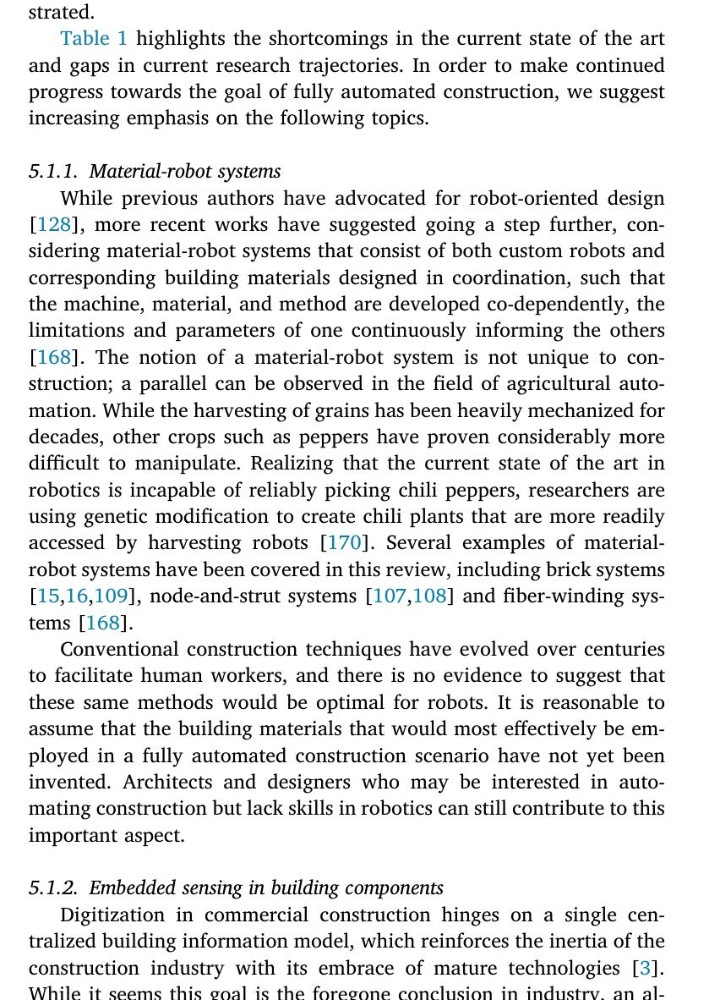
원문 Table 1 · PDF p.14 — Table 1 highlights the shortcomings in the current state of the art and gaps in current research trajectories. In order to make continued progress towards the goal of fully automated construction, we suggest increasing emphasis on the following topics.
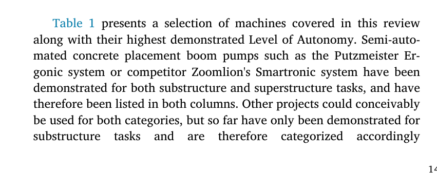
원문 Table 1 · PDF p.14 — Table 1 presents a selection of machines covered in this review along with their highest demonstrated Level of Autonomy. Semi-auto- mated concrete placement boom pumps such as the Putzmeister Er- gonic system or competitor Zoomlion's Smartronic system have been demonstrated for both substructure and superstructure tasks, and have therefore been listed in both columns. Other projects could conceivably be used for both categories, but so far have only been demonstrated for substructure tasks and are therefore categorized accordingly
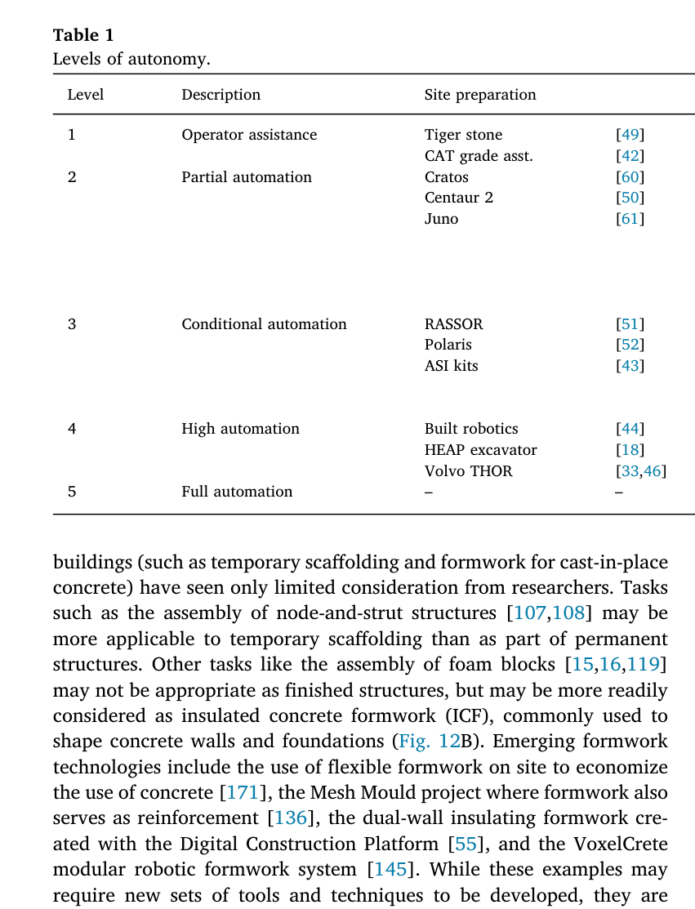
원문 Table 1 · PDF p.15 — Table 1 Levels of autonomy.
섹션별 원문 근거 페이지
배경: p.1, p.2, p.3
방법론: p.2, p.14, p.15
실험: p.2, p.14, p.15
결과: p.15, p.16, p.17
한계: p.16, p.17
원문·기존 요약·관련 자료
원문 PDFpdf
추출·교차검증 근거
2020 On-site autonomous construction robots Towards unsupervised building.pdf